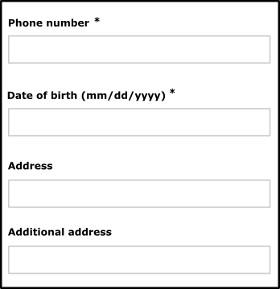

Essential criteria for the design
1. Set a title for each page
Target: everyone and especially people with visual impairments.
When: as of design and during development.
Description:
Give each page a title that is specific to it and which reflects its content or function (<title> tag).
The page title is the first element read by a screen reader, it must help to formally identify the page where you are.
Checklist:
- Even if there is no rule, in general (opening many tabs in multiple applications), we go from the most specific information to the least specific (e.g. title of the current page - name of the site). When opening a multitude of applications, the approach is different, in this case we will prefer going from the least specific information to the most specific (eg name of the site - title of the current page).
- When the content of the page is dynamic (displaying the result of a search, errors in a form, user adding content…), the title of the page should reflect this change.
Do:Home - Corporate web site of Orange
Don’t:Home
2. Start sections with headings
Target: everyone and especially people with cognitive limitations, reading difficulties and visual impairments.
When: as of design, content writing and during development.
Description:
Identifying heading tags (h1 to h6 HTML tags) used to structure the content of the pages.
Visually impaired people browsing with a screen reader can access the list of headings in the page to navigate quickly.
Just like in a Word document, it is possible to use the table of contents only if the heading tags have been properly set within the document.
Checklist:
- The headings must be relevant, reflect the structure of the information contained in the page.
- There should be no break in the heading hierarchy (we cannot jump from a
h2heading to ah4heading). - You can use several
h1headings per page (Don’t exceed two in most cases).
Goal:
- For all users: improve the structure of the page and its contents.
- For search engines: improve SEO.
- For users that are visually impaired, cognitively impaired or having reading difficulties: easy navigation and access to content.
Do:
Page with consistent and relevant headings:
(Heading 1) Home – Orange
(Heading 2) News
(Heading 2) Fibre broadband is coming!
(Heading 3) Check eligibility
3. Make sure there is enough contrast between front and background colors
Target: everyone, especially mobile and tablet users, people with visual impairments, reading or attention difficulties and elderly people.
When: as of design and during development.
Description:
The contrast between the text or the graphic component and the background should be high enough.
Insufficient contrast level will have detrimental impact on users with visual difficulties and for mobile and tablet users in a very bright environment.
Don’t:
The label “film | 20h40…” does not have enough contrast. It will not be readable by all users.

Checklist:
- Make sure that the contrast between the color of the background and that of the text and also for text in the form of image carrying information, is:
- 4.5:1 minimum for a size smaller than 24px CSS and 19px CSS in bold.
- 3:1 minimum is sufficient for a size greater than 24px CSS and 19px CSS in bold.
- Make sure that non-text GUI components, graphical objects and interface status (focus, hover) have a contrast of 3:1. This includes: buttons, radio buttons, check boxes, selection lists, navigation menus and panels, toolbars, tabs, carousels, sliders, progress bars, tooltips, graphics …
We do not have to apply this criterion, if:
- if the graphic component can not be represented otherwise: flag, logotype, real photos, screenshots, medical information diagrams using the colors of biology, gradients representing a measurement (heat maps …)
- if a text, like a label, a data table, brings the same information as the icon or the graphic
- if the contrast ratio of the image doesn't prevent the understanding of the content or the function
- Important: for applications used primarily in mobile web or in mobility, the contrast level of the most important elements must be 7:1 in order to ensure a good readability and usability for all.
Tool:
The Colour Contrast Analyser application can quickly measure colour contrast levels (free for Windows and Mac).
4. Do not use colour or sensory characteristics as the unique source of information
Target: everyone, especially the colour-blind and more generally people with visual impairments, cognitive limitations, hearing impairments and elderly people.
When: as of design and during development.
Description:
Do not use colour or sensory characteristics (shape, size, sound, direction, visual localization…) as the only way of conveying information, indicating an action, requesting a response or distinguishing an element. The information provided by a colour change or a sensory characteristic must be completed with textual information (alternative) or / and semantic structuring.
Do:

Don’t:

This example is not valid because the information is conveyed only by colour.
Checklist:
- Take a screenshot and convert it in black and white. The loss of colour should not cause difficulty while navigating, nor cause loss of information.
- Turn off the speakers, the level of information should remain the same.
5. Define text alternatives
Target: people with visual impairments, hearing difficulties or cognitive limitations and search engines.
When: as of design and during development.
Description:
Set text alternatives on all non-text informative elements (alternatives to images, icons). Also provide scripts or subtitles for the audio or video content.
Example
In the screenshot below, the design phase should provide text alternatives for each button:
- “menu”,
- “settings”,
- “previous channel”,
- “mute”…

6. Focus visibility
Target: everyone and especially people with visual impairments or cognitive limitations, motor disabilities and using a device outdoors.
When: as of graphic design and during development.
Description:
The position of the keyboard focus must be visible to all users. By default, the browser surrounds the item with dotted lines or a colored box. This behavior can be modified (we recommend at least 2px for this dotted box) or replaced (color inversion, changing the background color / text ...) to be made more visible but must not be deleted.
Be sure to provide a sufficient 3: 1 contrast ratio with the background color to make the focus visible (see Measure Color Contrast Level).
Moreover, it is necessary to check the visibility of the focus on all the focusable elements, in particular, because the background color of the element can be the same as the focus and thus, hide it.
Users navigating using the keyboard (TAB key) need to know the focus position at all times.
The visible effect when taking focus should be planned from the graphic design phase, as well as the visible effect when hovering.
Do:
In the following screenshots, the focus is located on the “209 SMS/month”.
The first figure shows the default behavior (focus represented by a dotted box).
In the second capture, the dotted lines have been removed, replaced by a coloured box to explicitly indicate the location of the focus.

7. Changing text size
Target: everyone and especially people with visual impairments, using a device outdoors, and elderly people.
When: as of graphic design and mainly during development.
Description:
The text size should be able to be doubled (set the zoom, text only, to 200% in the browser settings). At this zoom level, the page layout can be altered, but the information must be readable (text or bunk not truncated).
In addition, we must ensure to make responsive web design, so provide different displays in screen type widths (break points) before the development phase.
Moreover, some design choices may or may not facilitate the implementation of this criterion during development, so it is important to think about it from the start.
Example:
The screenshot below shows a page with the zoom set to 100%.
Do:
Zoom set to 200%.
Don’t:
Zoom set to 200%. In this case the height of the text container did not resized according to text size.
8. Allow text spacing
Target: Everyone, especially people with visual and dyslexic disabilities.
When: as of graphic design and during development.
Even if it is during the development phase that we will ensure the validity of this criterion, it is important, from the design phase, to think about the height of the lines and the spacing of the paragraphs and text. It is generally accepted that a line height (line-height) of 1.5 makes it possible to obtain a good readability of the text, for example an article in English entitled: Why you should go big with line spacing .
Description:
If the user applies the following settings, the text must remain legible (no truncated content, superimposed):
- The height of the lines must be able to be adjusted to 1.5 times minimum the size of the font.
- The space between two paragraphs must be adjustable to at least 2 times the size of the font.
- The spacing between the letters must be able to be adjusted to 0.12 times the size of the font.
- The spacing between words must be able to be adjusted to 0.16 times minimum the size of the font.
For information, the criteria mentioned above is like applying the following CSS styles at the code level:
* {
line-height: 1.5! important;
letter-spacing: .12em! important;
word-spacing: .16em! important;
}
p {
margin-bottom: 2em!important;
}
Bookmarklet:
To make the test easier, you can use the following bookmarklet that will apply these styles to your browser's current page (bookmarklet to slide in your bookmarks bar): Text spacing
9. Allowing control of animations
Target: people with visual impairments, reading/attention/understanding difficulties and seizure disorders.
When: when designing the service and during graphic design.
Description:
All moving, refreshed or flashing content must provide a way to be stopped, paused or hidden by the user, i^f this animation last more than 5 seconds.
Also, avoid as much as possible flashing content and sudden brightness changes (see The logo of the Olympics causes seizures).
Example: 
A carousel that automatically scrolls must be paused when the mouse is over it or when it receives the focus. It is also possible to add a “pause” button directly in the interface.
10. Link and button labels
Target: everyone and especially people with visual impairments, cognitive limitations or attention difficulties.
When: when designing the service and during graphic design.
Description:
The links texts and buttons texts should be explicit enough.
In exceptional cases when it is technically impossible, provide a explicit label that can be read only by screen reader (and other assistive technologies).
Do:Learn about our offers
Don’t:click heremore details
11. Navigating with the keyboard
Target: everyone, especially people with motor or visual impairments or using a device outdoors.
When: when designing the service and during development.
Description:
All features must be accessible using the keyboard only. Pressing the keyboard Tab key, the browser must passes the focus on each clickable elements.
Moreover, if the features are mouse-specific (drag and drop, right click menu…), ensure that these are also available through other means elsewhere in the interface (button, icon, menu…).
See how to navigate with a keyboard in a web browser.
Example:
In the webmail, right-clicking on the “trash” opens a menu to empty the trash, this option should be also available through an “empty the trash” button elsewhere in the interface or from a drop-down menu accessible with the keyboard.
12. Usable forms
Target: everyone and especially people with visual impairments, dyslexia and cognitive disabilities.
When: during design and development.
Description:
Each form input must be associated with a label identifying the function of the field, the type of data and the expected format. This label should be visually close to the field so we can easily mentally link them (especially for people using zoom or a software magnifier, or even for mobile users).
Error messages should clearly identify the invalid field, and if necessary suggest a correction. This applies to input fields, but also to other types of fields (drop-down list, radio button, checkbox…). From the development perspective, this label must be associated with the form field to facilitate the navigation with a screen reader.
Do:

Don’t: 
In some cases, it seems unnecessary to associate a label to a form field (search field accompanied by a magnifying glass button for example). In such case you can provide a hidden label, it will not be displayed on the screen but it will be associated with the form field programmatically for easy navigation with a screen reader.
Lastly, the wording of the error messages should be explicit.
Do: 
Don’t: 
13. Avoid dialogues and opening new windows
Target: elderly people, people with cognitive or visual impairments or using a device outdoors.
When: as of design and in the development.
Description:
Avoid as much as possible the actions that open a new window (or a new tab) of the browser. If a link triggers the opening of a new window, you must ensure that the text “new window” is vocalized by screen readers programmatically. So that visually impaired people know that a new window has been opened.
Also avoid the systematic use of dialogues to display information in the pages (presentation of service…). They must be reserved for important information that requires immediate attention and remain small.
These modal windows or pop-in often cause accessibility problems for people who navigate with a keyboard or a screen reader, and they will require special attention during the development phase.
Don’t:
In the example below the use of a dialogue is not justified. Using a standard web page would:
- allow more space to the content (by removing the margins around the dialogue),
- allow the “back” button to go back when navigating between pages of the dialogue,
- make the display on small screens easier,
- avoid accessibility problems for people who navigate using the keyboard or using a screen reader,
- reduce the weight of the page and improve loading time, as in this example the page behind the dialogue box must be charged.

14. Provide skip links
Target: useful for mobile and tablet users, people with visual impairments, motor disabilities or using a device outdoors.
When: as of the design phase and in the development.
Description:
Provide skip links such as “Skip to content” on each page. It facilitates navigation for people using the keyboard, using a device outdoors or with a screen reader. In very specific cases, the links can be hidden on the screen and appear only when keyboard navigation is detected.
Example:
Skip links (“Skip to navigation”, “Skip to content”) are available on this site.
To make them appear, move the focus on the top of the page by clicking on your browser’s address bar, for example, then repeatedly press the TAB key.

15. Identify and maintain consistency of groupings and different regions of the page
Target: Everyone, especially people with visual, cognitive or attention deficit disorders.
When: when designing.
Description:
Provide ways to identify and visually distinguish the different parts of the page and ensure the consistency of these regions or groupings in all pages.
Checklist:
- Make sure that the navigation mechanisms are always located at the same place in a set of pages.
- Ensure that the components and groupings that have the same function, are identified (visually) in the same way and, as far as possible, respect the classic appearance of these elements so as not to disturb the user accustomed to a specific aspect of them (for example, links are usually underlined ...).
- Ensure that the areas of the page are clearly delimited (borders, edges, sufficient contrast ...) or that there is a way to visually distinguish the groups (sub-menu, drop-down list ...) as well as the different regions of the page.
Do:

Here, the tooltip (tooltip) is delimited by a visible border and sufficiently contrasted, to identify its content.
Don't:

It is very difficult to associate the themes ("par region", "par genre"...) and the sub-themes in columns, especially since the horizontal borders are not enough contrasted.
16. Explicitly locate the page in the site and provide several ways to access it
Target: everyone, especially people who are visually or cognitively impaired.
When: when designing.
Description:
Give the user several ways to locate and access specific content, locate the web page being viewed in a set of pages. When the page is a step in a process where the pages follow one after the other, this criterion can be ignored.
Checklist:
Make sure that several systems allow you to locate and access a page or content in the site: a search tool on the entire site, a site map, a global navigation menu, a breadcrumb trail ...
Do:
The site offers, at the same time, a complete and precise main navigation and a breadcrumb trail.
Don't:
An application provides a parcel navigation menu and no other way for the user to navigate the pages or locate where the current page is in the tree.
17. Avoid captcha
Target: everyone in particular, visually impaired people.
When: during design and development.
Description
Captchas are often the source of difficulties for all users. If the implementation of an anti-spam system can not be avoided, it is advisable to move towards a more flexible solution for the user:
- Double authentication;
- Hidden form field left blank (honeypot technique), not visible to the user;
- Providing phone support to make sure the customer is a real person;
- A check to ensure that the same IP / User agent combination does not attempt to submit the form more than N times per second.
If no other alternative is possible, it is essential to provide an alternative for captcha only visual or sound by proposing a combination of captcha:
- an audio captcha + visual,
- logical tests (question whose answer is obvious, simple mathematical test ...) + classic visual captcha
- …
18. Define sensitive areas of sufficient size
Target: everyone in particular, people with motor or visual disability and mobility.
When: during design and development.
Description:
Each sensitive area must have a sufficient size (minimum 9mm width and height).
In addition, the sensitive areas must be sufficiently spaced from each other (about 2mm minimum).
21. Offer an alternative to complex gestures
Target: everyone in particular, people with motor or visual disability and mobility.
When & nbsp;: during design and development.
Description:
For each complex gestural interaction, an alternative must be available (for example a non-gestural or simplified alternative).
Similarly for interactions requiring a change of orientation of the screen (tilting, rotation, shaking ...).
Complex gesture: any multi-pointer gesture (requiring several fingers), and / or path-bases gesture.
Simplified gesture: an alternative requiring a single pointer (one finger) without path-based gesture.
22. Give access to the content regardless of the orientation of the screen
Target: Everyone in particular, people with motor or visual disability and mobility.
When: during design and development.
Description:
Access to the content must not depend on the orientation of the screen (portrait and landscape) unless a specific display orientation is essential (e.g. serious game).
23. Provide accessible audio or video tracks
Target: everyone and particularly people with visual disabilities, hearing impairments, cognitive limitations, or difficulties with English.
When: during design and development.
Description:
To be accessible, the multimedia contents must:
- propose a full transcript
- offer subtitles (video only)
- offer audio description (video only)
- choose an accessible media player
- Prohibit the automatic start of the video when loading the page
- Prohibit videos that have more than 3 flashes per second
- Furthermore, for any sound that has been emitted for more than 3 seconds, the user must have the option of either stopping or pausing it or controlling its volume regardless of the overall system volume.
For more info check out accessibility recommendations for video content, animations and Orange audios.
Users’ goal:
Provide access to visual and hearing information for people who cannot access it: visually impaired, blind, deaf, cognitively deficient, computer without speakers, noisy or bright environment.
Technical goal:
Allow audio and video referencing.